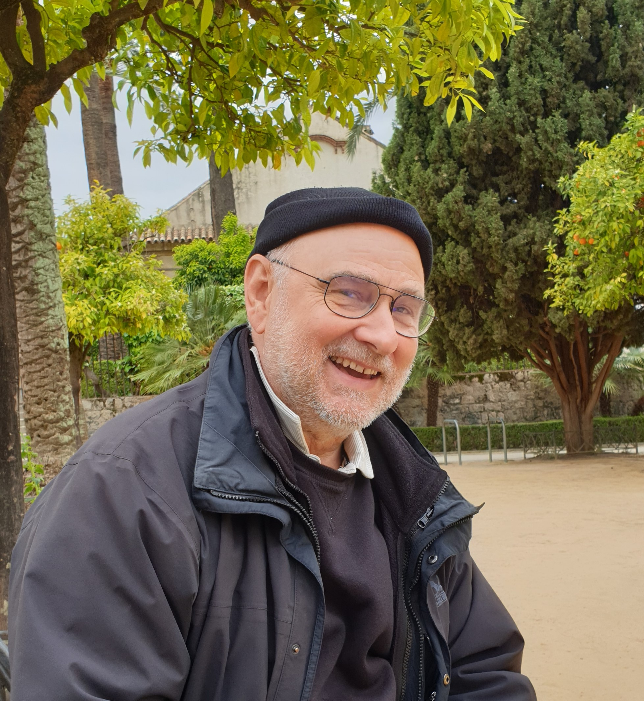
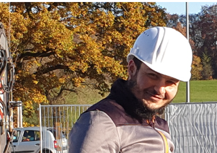
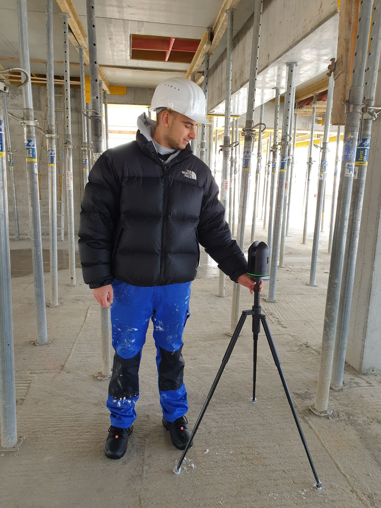
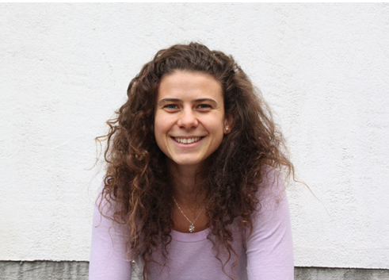
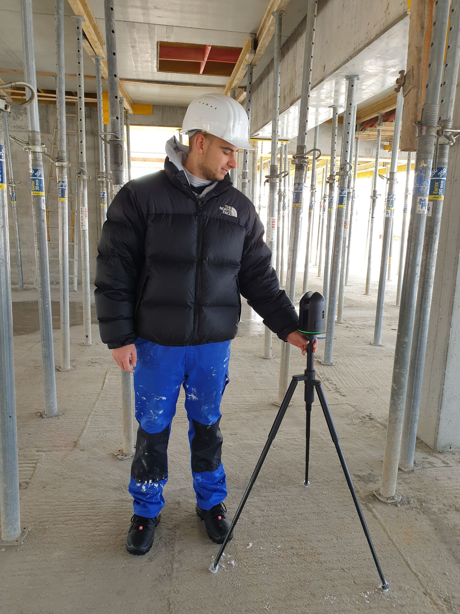
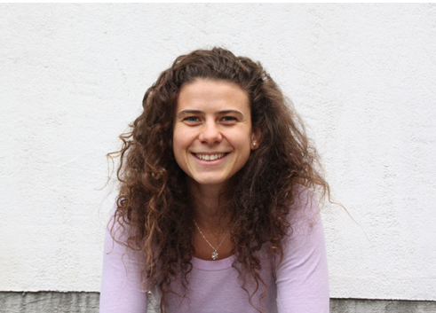
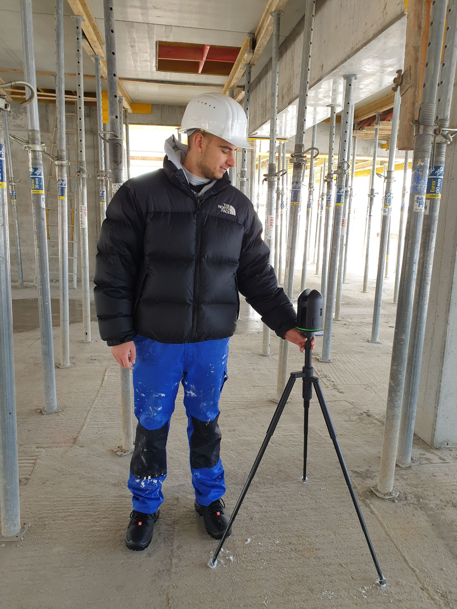
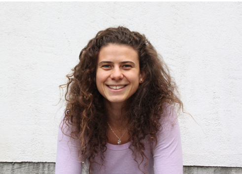

Wir setzen auf den Einsatz von moderner, digitaler Technik und gelten somit gerade in der Baubranche als ein innovatives, und zukunftsorientiertes Unternehmen. Ziel aller Projekte ist ein energieoptimiertes und nachhaltiges Endprodukt. Von der digitalen Modellierung, über die modellbasierte virtuelle Simulation bis zur realen Fertigstellung werden Sie durchgehend von uns betreut. Wir bedienen nicht nur die einzelnen Sparten „Architektur“, „Technische Gebäudeausrüstung“ und „Pharmaplanung“, sondern zeichnen uns durch die Planung und Abwicklung dieser drei Bestandteile als Gesamtprojekt aus. Bei der Planung wird strukturell nach dem Prinzip „form follows function“ vorgegangen. Für jedes Projekt stellen wir das Team individuell auf das Vorhaben zugeschnitten zusammen und konsultieren genau die Fachleute, die zur erfolgreichen und professionellen Umsetzung benötigt werden. Wir bieten nicht nur die Durchführung des Bauvorhabens und die Planung der Produktionsabläufe, sondern auch die Möglichkeit zur nachfolgenden Betreuung mit modernster Arbeitsmethoden: Building Information Modeling (BIM). Dies bedeutet, immer den aktuellsten Stand des gesamten Gebäudes, inklusive Technik für alle beteiligten Parteien, in einem digitalen Modell zur Verfügung zu stellen. Die Partner arbeiten gemeinsam am Modell und führen die Baudokumentation digital. Der Baufortschritt wir mit einem Laserscanner dokumentiert und vermessen. Mit den erzeugten Punktwolken wir das digitale Modell der Realität angepasst. Es kann jederzeit ortsunabhängig abgerufen und aktualisiert werden. Projektspezifisch kommen auch Virtual Reality und 3D-Druck zum Einsatz. Hintergrund und gleichzeitig Ziel des Einsatzes dieser Technologien ist ein optimales Bauzeiten- und Kostenmanagement endend im kompletten LifeCycle-Management der Bauobjekte.
Team
    
 
 